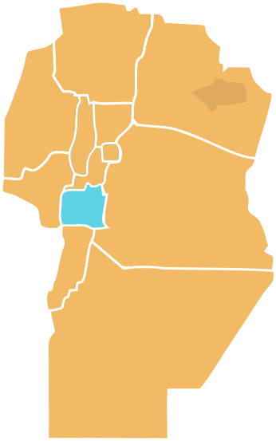
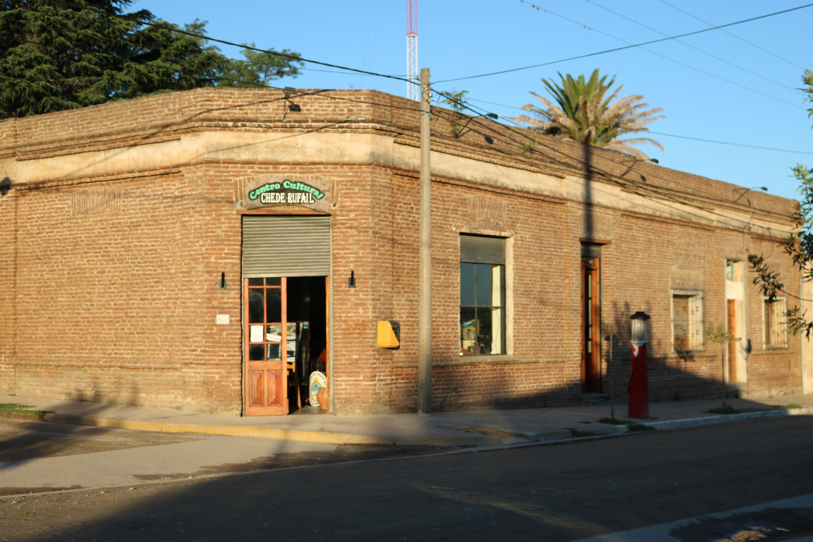
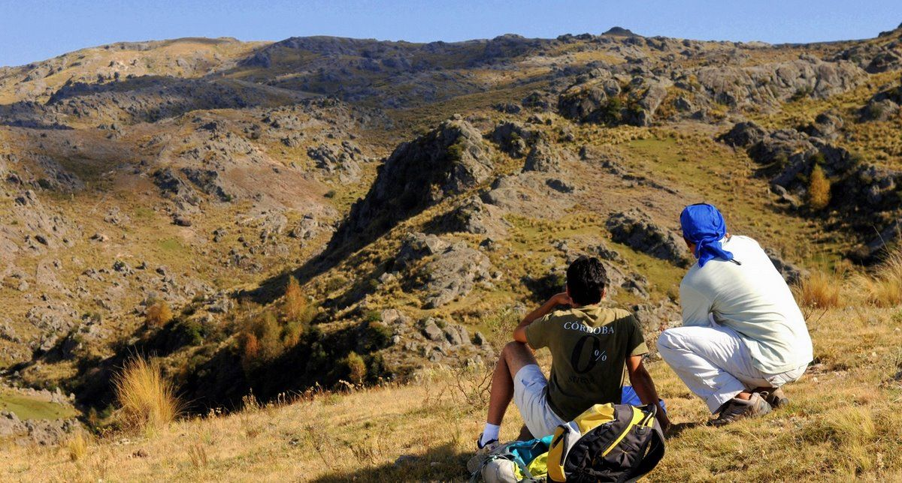
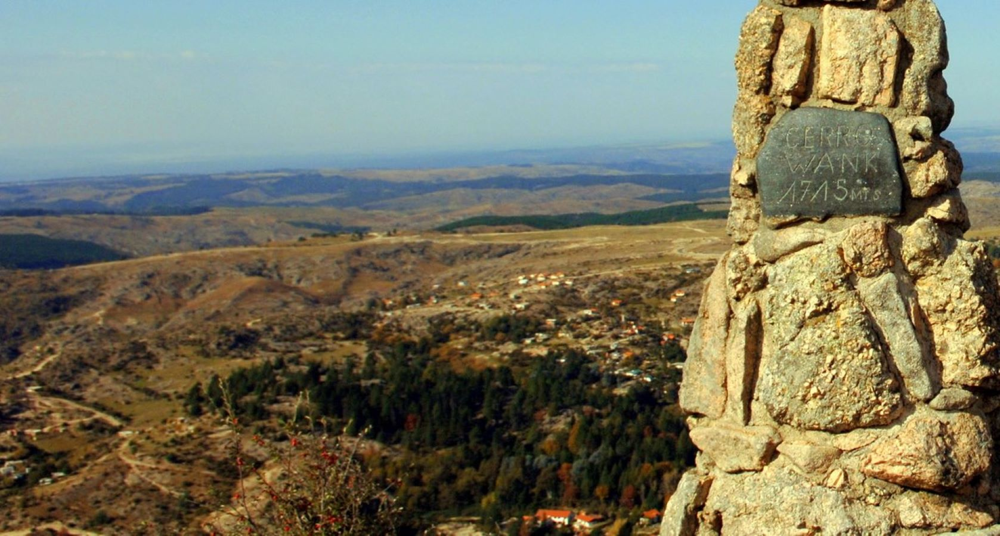
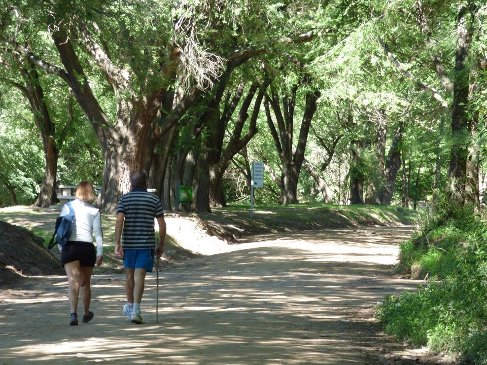

Calamuchita
Partiendo desde Córdoba capital, a esta área se accede por la RP Nº 5. Calamuchita se distingue por su especial combinación de paisajes serranos, arquitectura centroeuropea y una excelente gastronomía. Esta zona se caracteriza por albergar grandes espejos de agua como el Dique Los Molinos, el Embalse Río Tercero, el Dique Piedras Moras, la Segunda Usina y el Embalse Cerro Pelado, en los cuales es posible pescar y practicar deportes acuáticos como navegación a vela y motor, kitesurf, kayak y moto de agua.
Uno de los embalses más destacados de la región es el Embalse de Río Tercero (Ministro Pistarini), en donde se conjuga la belleza natural con los avances tecnológicos de las centrales hidroeléctricas y nucleares, ambas generadoras de energía para todo el territorio nacional. Estos lagos y embalses son alimentados por numerosos ríos que atraviesan todo el territorio, los cuales cuentan con balnearios y paradores muy bien equipados y confortables.
Esta área alberga más de veinte localidades turísticas. Entre el relieve de las montañas, fueron naciendo pintorescas villas serranas, algunas de las cuales aún hoy, conservan su estirpe centroeuropea. Otras en cambio, fueron creciendo en población hasta convertirse en importantes ciudades con importantes infraestructuras de servicios.
La presencia del Cerro Champaquí, de 2.790 m de altura, incorpora una belleza inigualable al paisaje siendo el más alto de la provincia de Córdoba y en uno de los referentes nacionales del turismo aventura, ya que resulta un escenario ideal para la práctica de trekking, cabalgatas, travesías 4×4, rappel y escalada en roca.
Para quienes gusten de la buena gastronomía, Calamuchita ofrece un sinnúmero de posibilidades para el deleite de los amantes de la buena cocina. A su vez, cuenta con una estructura de servicios de calidad, que incluye hoteles de 2, 3 y 4 estrellas, a los que se suman posadas, cabañas, casas de alquiler y campings.
En esta región, se pueden degustar vinos frescos y aromáticos, que invitan a vivir una experiencia única. Se pueden recorrer las siguientes propuestas enoturísticas: Las Cañitas en Villa Berna, Río del Medio en Los Reartes, Famiglia Furfaro y Vista Grande en Villa Ciudad Parque, Finca Atos en Atos Pampa, Juana Urbana y Campo del Libertador en Villa Yacanto, Finca Pu Duam y Fábrica de Espumante Sineres en Villa General Belgrano, Las Acacias en paraje Loma Alta, Finca Granero en Potrero de Garay, Alma Minera en Río de los Sauces y Familia Benito en camino Cerro Pelado.
Paseo Cultural por Río de los Sauces
Río de los Sauces es uno de los pueblos más antiguos del Valle de Calamuchita. Conocerlo y descubrirlo significa caminar por las callecitas de una localidad con más de 380 años.
Por sus rincones, aparece una pintoresca posta religiosa, la capilla de Nuestro Señor de la Buena Muerte, reconstruida en 1882. A su alrededor se asientan antiguas casas y ranchos que dan la impresión de estar en otra época.

Cultura en el pueblo
Otro sitio infaltable, se trata del Centro Cultural Chede Rufail, un antiguo almacén de ramos generales de 1900. Recuperado y convertido en un centro cultural, es un lugar significativo para recrear la idiosincrasia comercial y cultural del pueblo.
Sendero al Cerro Wank
Uno de los paseos emblemáticos de la Cumbrecita es el ascenso al cerro Wank, comenzando a través de una pequeña pasarela de madera que atraviesa el arroyo Almbach, frente a la tradicional confitería Liesbeth. Este camino regala verdaderos paisajes para llevar adelante un safari fotográfico.

El sendero cuenta con indicaciones, carteles de madera, flechas y mojones de piedra que permiten guiarse con facilidad. Posee una dificultad física media, su recorrido es de 3 kilómetros y la caminata requiere 40 minutos de subida y otros 40 de regreso.
A medida que se comienza a “trepar”, se atraviesa un bosque de abedules y al ganar más altura, la vegetación abre paso a una observación panorámica de los distintos rincones del pueblo. En la cima se encuentra un monolito de piedra que implica haber conquistado la meta: 1.715 m.s.n.m desde donde es posible apreciar las imponentes Sierras Grandes, el valle de Calamuchita y todo el contorno que rodea a este rincón serrano.
Continuando por el sendero es posible disfrutar de la Cascada Las Gemelas, Cascada Escondida y el Vallecito del Abedul. Si bien es un sendero con una mayor dificultad, su esfuerzo es recompensado con su inigualable belleza. Se recomienda para este trayecto de dificultad exigente, contratar un Prestador habilitado.

Ficha Técnica
Recorrido ida y vuelta
- Dificultad física: Moderada
- Distancia: 6 Km
- Recorrido: 2 Hs
- Perfil de elevación:
- Altura Máxima: 1620 m.s.n.m.
- Altura Mínima: 1360 m.s.n.m.
- Desnivel positivo acumulado: 260 m.
Entre Ríos y Senderos en los Reartes
Una de las principales premisas para disfrutar de Los Reartes, será complementar la visita del casco histórico con diversas actividades al aire libre.
Este rincón de Calamuchita cuenta con dos hermosos ríos que regalan en verano la oportunidad de sumergirse en sus aguas. En los meses con menos calor permiten disfrutar de sus márgenes entre mates y picnics. Uno de ellos es el río Los Reartes, que nace al pie del cerro Negro, y atraviesa la comuna ofreciendo playas de aguas mansas y arboledas. En sus costaneras se encuentran diferentes balnearios y paradores.

En relación a esto, este río posee sectores controlados con estacionamiento tarifado y asadores, baños y señalización. Entre ellos, se pueden nombrar: La Toma, El Aguacero, La Tasca y El Chorro.
Otra de las alternativas, es el río del Medio. Este afluente corre entre los cauces de los ríos Los Reartes y Los Espinillos y alimenta al lago Los Molinos. Es así que sus nacientes bajan por el cerro Morito y alrededor de él se encuentran platas de arena blanca y un entorno agreste y tranquilo, sin paradores ni balnearios.
Caminos por andar
Por esta zona, sobre los caminos que delinean las sombras de los árboles, se puede realizar senderismo. Un circuito posible, ideal para hacer en familia, es el sendero Yucac con unos 1600 metros, que lleva cerca de 40 minutos, ida y vuelta. Este trayecto permite bordear al río Los Reartes y llegar a una olla de agua ideal para nadar. ¿Un dato? Si se decide continuar, pasando este pozo de agua, se puede encontrar un mirador.

Otra propuesta más que interesante es ir descubriendo los morteros donde los pueblos comechingones antiguamente molían sus frutos. Estos cuencos se pueden encontrar en el sector La Isla, La Curva, La Toma y el El Vado.